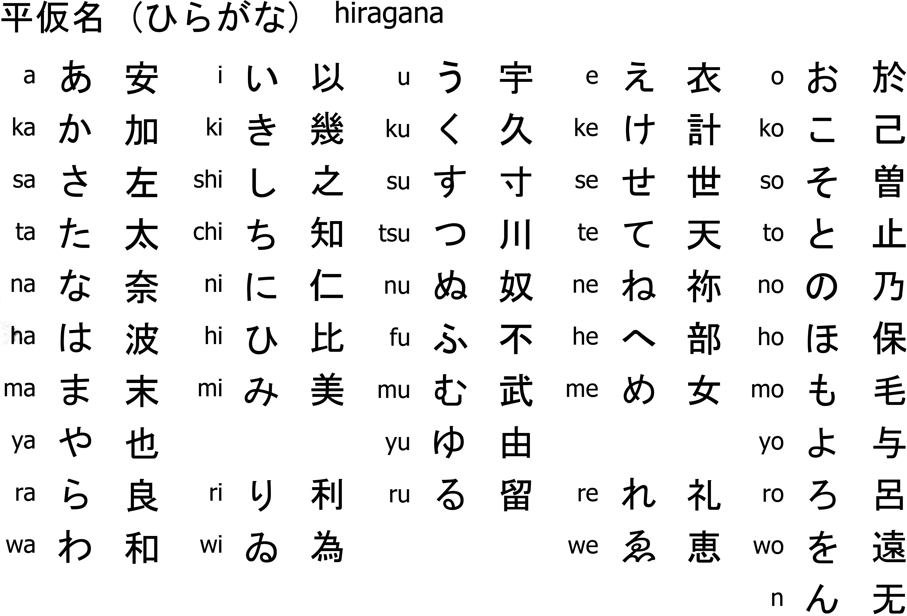

Each row represents a vowel(a - i - u - e - o), each colom has their own consonant (k - s - t - h - m - y - r - w). Combining the two creates a syllable, For example if we take the k collum and the i row, then we get the syllable Ki.
Immage source: tofgu